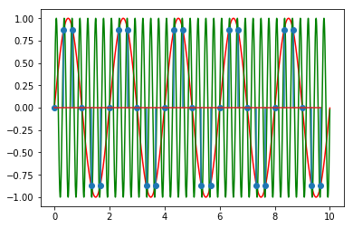

正弦信号采样¶
以下程序用Python语言编写。
[23]:
%matplotlib inline
from matplotlib.pyplot import *
from numpy import *
产生固定频率的正弦信号¶
对于两个频率分别为\(f_1\)和\(f_2\)的正弦信号，
\[x_1(t) = \sin(2\pi f_1 t)\]
\[x_2(t) = \sin(2\pi f_2 t)\]
分别以相同的频率\(f_s\)进行采样，得到两个序列\(x_1[n]\)和 \(x_2[n]\)。
那么，当\(f_1 + f_2 = k*f_s, � k�in �mathbb{Z}\)时，满足
\[x_1[n] = x_2[n]\]
[65]:
fs = 3 # 采样频率为 3Hz
f1 = 0.5 # 产生频率为 10Hz 的正弦信号
f2 = f1 + fs # 取 k = 1
dT = 0.001
t = arange(0,10,dT)
plot(t,sin(2*pi*f1*t),'-r')
plot(t,sin(2*pi*f2*t),'-g')
dT = 1/fs
ts = arange(0,10,dT)
stem(ts,sin(2*pi*f1*ts))
show()
